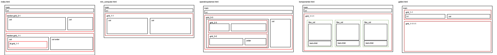
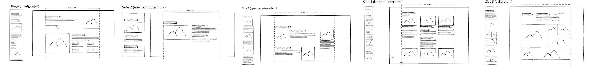
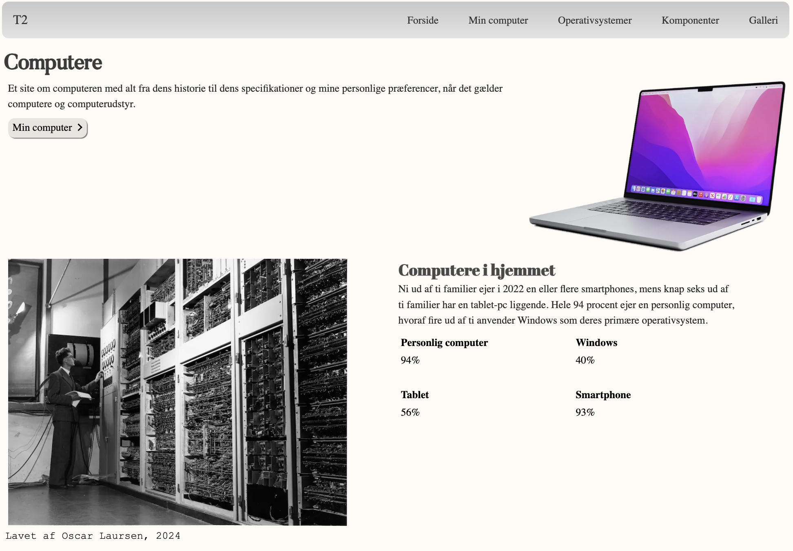

02 — web
02 — web
Tema og opgave
I dette forløb blev vi for første gang introduceret til kodning i Visual Studio Code. Vi fik udleveret wireframes og layoutdiagrammer, som vi skulle følge for at lære at opbygge en HTML-struktur fra mock-up til kode (er vedhæftet nederst på siden). Her lærte vi at bruge en mobile-first skabelon til at starte med at designe vores website til mobiltelefoner og derefter tilføje en @media screen for at tilpasse layoutet til større skærme. I dette forløb blev vi også introduceret for en burgermenu, som jeg også har gjort meget brug af i de andre temaer.
Konklusion og Refleksion
Den største udfordring i dette projekt var helt klart at lære at bruge grid. Alt kode var nyt, men da man først begyndte at forstå det, blev det overraskende nemt. Der var meget begrænset kreativ frihed i dette projekt, hvilket også afspejles på siden. Dog var temaet en rigtig god introduktion til HTML og CSS.
  